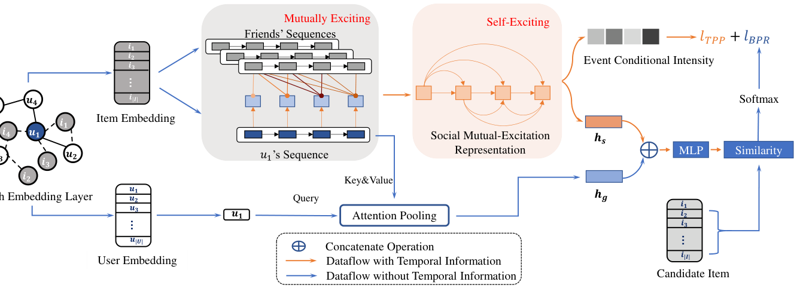

Extracting Attentive Social Temporal Excitation for Sequential Recommendation (提取注意力式社交时序激励的序列推荐)
- 会议/期刊: CIKM 2021
- 作者与机构: Yunzhe Li, Yue Ding, Bo Chen, Xin Xin, Yule Wang, Yuxiang Shi, Ruiming Tang, Dong Wang（上海交通大学、华为诺亚方舟实验室、格拉斯哥大学）
- 推荐链路定位: 召回（Next-Item 序列召回打分）
- 研究方向: 序列与会话推荐 / 社交与群组推荐
- 论文原文: https://arxiv.org/abs/2109.13539v1
- 开源代码: 暂未开源
TL;DR (1分钟核心速览)
现有社交序列推荐把好友序列先编码成用户向量再聚合（用户级间接范式），丢失了跨用户行为事件之间的时间先后关系。STEN 引入时序点过程，把"好友事件如何激励当前事件"改写为带时间间隔偏置的注意力强度函数，在事件级直接建模社交互助激励与自我激励，并用社交异构图精修节点表示。在三数据集 Leave-One-Out 全库排序下，Recall@10/NDCG@10/MRR@10 全面最优，最高相对提升 5.79%/6.29%/7.58%。
Background & Motivation (背景与核心矛盾)
- 主流范式: 社交推荐用 GNN 在用户级传播好友偏好（Diffnet、DANSER），时序推荐用 SASRec/TiSASRec 或 THP 建模单用户序列与时间间隔，两者基本各自为战。
- 前人局限: ① 间接范式需先把好友整条序列压缩为一个向量，事件粒度信息在聚合时被不可逆地丢弃；② 跨用户事件序列是异步的，若 Alice 在 Bob 买鞋后极短时间内买高跟鞋（\(t_3\le t_6\)），激励应强，若\(t_3\gg t_6\)或\(t_3>t_6\) 则激励应趋零，而纯顺序建模无法区分。
- 核心洞察: 好友影响力本质是"事件对事件"的条件强度激发，恰可由 Hawkes 过程的互助激励（mutually exciting）形式刻画；而用户自身兴趣演化对应自我激励（self-exciting）过程。
- 本文切入点: 用注意力参数化的累积互激励强度函数替代积分近似，实现可反向传播、可 mask 防穿越的事件级社交时序建模。
Method (核心方法设计)
1. 整体框架 (Overall Architecture)
输入为用户自身事件序列 \(\mathbf{s}_n\)、其好友事件序列集合、以及用户-用户 / 用户-物品构成的社交异构图。先由社交异构图嵌入层产出用户与物品节点表示（好友事件与目标事件均用图精修后的物品向量表示）；一路用 vanilla attention 以用户向量为 query 汇聚自身序列得一般兴趣\(h_g\)；另一路将好友事件送入互激励时序网络，逐目标事件算出社交互助时序强度\(\lambda^{m}_{n,i}\)，再将该强度序列送入自激励时序网络得到动态兴趣\(h_s\)；两者拼接线性融合为\(h_{hybrid}\) 后对全物品做 softmax，训练时 BPR 与点过程对数似然联合优化。
flowchart TD
A["社交异构图 + 用户/好友事件序列"] --> B["社交图嵌入层(用户注意力聚合 / 物品元路径)"]
B --> C["互激励时序网络(含 Δt 偏置的 mask Attention)"]
C --> D["自激励时序网络 → h_s"]
B --> E["Vanilla Attention → h_g"]
D --> F["融合 h_hybrid → Softmax 全库打分"]
E --> F
F --> G["BPR + TPP 对数似然联合训练"]
2. 关键设计拆解 (Key Designs)
-
累积互激励强度函数（把 Hawkes 积分换成可学习 softplus 映射）：痛点是对条件强度 \(\lambda_{n,j}(t_i,t)\)做积分需要昂贵的数值近似。作者改为直接建模"事件\(e_{j,t_w}\)对事件\(e_{n,t_i}\)的累积激励"：\(\Phi(e_{n,t_i},e_{j,t_w})=\mathrm{softplus}\big(\mathrm{corr}(e_{n,t_i},e_{j,t_w})+\beta(t_i-t_w)+\mu\big)\)，三项分别承担内容相关性、时间衰减/增强与基础激励；softplus 保证强度恒正，符合点过程约束，同时全式可微、免积分近似。直觉上，\(\beta<0\)时学过"久远事件影响弱"，\(\beta>0\) 则允许"预热型"激励。
-
带时间间隔偏置的互助激励注意力（事件级直接范式的落地算子）：把好友全部事件拼成 \(S_F\in\mathbb{R}^{d_F\times d}\)，以目标事件表示\(h_{n,i}\) 为 query，在标准点积注意力上直接加时间项并对未来事件 mask： \(A_m=\mathrm{softmax}\big(\mathrm{mask}(\frac{Q_mK_m^{T}}{\sqrt{d}}+\beta_m\Delta t+\mu_m)\big),\quad \lambda^{m}_{n,i}=\sum_{k=1}^{d_F}\alpha_{m,k}W^{V}_{m}h_{F,k}\)其中\(\Delta t\)为好友事件与目标事件的时间间隔。相比 RNN 式神经点过程，注意力避免了长程依赖衰减，且 mask 严格禁止使用\(t_i\) 之后的好友事件，从机制上杜绝穿越。
-
自我激励网络与训练目标：将互助强度序列 \(T^m_n\)作为 query/key/value 输入同构的带\(\Delta t\)偏置注意力，取末位输出即\(h_s\)（公式结构同上式，仅输入换成\(T^m_n\)）。总损失\(\mathcal{L}=\mathcal{L}_{BPR}+\mathcal{L}_{P_n}+\gamma\|\Theta\|_2^{2}\)，其中点过程负对数似然用梯形法近似积分：\(\mathcal{L}_{P_n}=-\sum_i\log\lambda^{S}_{n,i}+\frac{1}{2}\sum_i\Delta t_i(\lambda^{S}_{n,i}+\lambda^{S}_{n,i+1})\)。负采样沿用 BPR 的随机未交互负例（每正例 1 负例），推理时以\(h_{hybrid}\) 对全物品内积做 softmax，无额外检索结构开销。
Experimental Setup & Evaluation Protocol (实验设置与评估协议)
- 数据集与预处理（评分/评论统一二值化为隐式反馈）：
| 数据集 | #Users | #Items | #Interactions | 密度 | 特征/场景说明 |
|---|---|---|---|---|---|
| Delicious | 1,867 | 24,052 | 437,593 | 0.97% | 书签打标序列 + 社交关系，人均 234 事件 |
| Yelp | 74,982 | 59,692 | 811,503 | 0.018% | 商户评论（取前 10% 时段），社交边极稠密 |
| Ciao | 6,596 | 107,320 | 274,065 | 0.039% | 评分 + 信任关系，物品数远多于用户 |
- 过滤规则: 用户交互 \(<5\)剔除；物品出现次数 Yelp\(<10\)、其余\(<5\) 剔除（近似 5-core）。
- 数据划分与防穿越:
Leave-One-Out——每用户最后 1 个交互为测试、倒数第 2 个为验证，其余训练；模型内部对好友与自身事件均加时间 mask 防未来信息泄漏。 - 排名评测协议:
Full-Ranking（对全部 \(|\mathcal{I}|\)个物品做 softmax 全库排序，非采样排序），指标 Recall@\(\{10,20\}\)、NDCG@\(\{10,20\}\)、MRR@\(\{10,20\}\)。 - 对比基线与超参: 常规 BPR-MF；序列 FPMC/SR-GNN/SASRec/BERT4Rec；时序 THP/TiSASRec；社交 SBPR/DANSER/Diffnet。嵌入维度 \(d\in\{40,\dots,140\}\)、学习率\(\{0.001,0.005,0.01\}\)网格搜索，同构最大图阶 2、采样好友数\(M=10\)、序列长\(\{300,30,50\}\)，最优基线结果均以单尾 t 检验\(p\le0.05\) 报告显著性。
Key Experimental Results (实验关键数据)
1. 主实验对比 (Main Results)
| 方法 | Delicious R@10 | N@10 | MRR@10 | Yelp R@10 | N@10 | MRR@10 | Ciao R@10 | N@10 | MRR@10 |
|---|---|---|---|---|---|---|---|---|---|
| BPR-MF | 0.1935 | 0.1343 | 0.1161 | 0.0353 | 0.0177 | 0.0124 | 0.0591 | 0.0304 | 0.0217 |
| FPMC | 0.2784 | 0.2317 | 0.2170 | 0.0436 | 0.0212 | 0.0145 | 0.0593 | 0.0309 | 0.0223 |
| SASRec | 0.2857 | 0.2145 | 0.1918 | 0.0461 | 0.0233 | 0.0165 | 0.0624 | 0.0325 | 0.0235 |
| BERT4Rec | 0.3125 | 0.2583 | 0.2353 | 0.0452 | 0.0226 | 0.0158 | 0.0832 | 0.0523 | 0.0384 |
| TiSASRec | 0.3362 | 0.2702 | 0.2528 | 0.0493 | 0.0247 | 0.0172 | 0.0960 | 0.0564 | 0.0427 |
| DANSER | 0.2969 | 0.1809 | 0.1535 | 0.0451 | 0.0227 | 0.0160 | 0.0815 | 0.0455 | 0.0344 |
| Diffnet | 0.3016 | 0.1963 | 0.1563 | 0.0453 | 0.0226 | 0.0161 | 0.0897 | 0.0508 | 0.0389 |
| STEN | 0.3492 | 0.2833 | 0.2673 | 0.0512 | 0.0262 | 0.0185 | 0.1019 | 0.0596 | 0.0462 |
| Improv.% | +3.87% | +4.83% | +5.74% | +3.80% | +6.29% | +7.32% | +5.79% | +5.37% | +7.58% |
2. 消融实验 (Ablation Study)
| 变体 | Delicious R@10 | N@10 | Yelp R@10 | N@10 | Ciao R@10 | N@10 |
|---|---|---|---|---|---|---|
| w/o GE（图嵌入→lookup） | 0.3355 | 0.2722 | 0.0468 | 0.0229 | 0.0976 | 0.0582 |
| w/o MT（去互激励网络） | 0.3201 | 0.2646 | 0.0431 | 0.0215 | 0.0833 | 0.0490 |
| w/o ST（自激励→均值池化） | 0.3075 | 0.2529 | 0.0447 | 0.0221 | 0.0815 | 0.0482 |
| w/o TC（去时间项与 \(\mathcal{L}_{P_n}\)） | 0.3163 | 0.2617 | 0.0463 | 0.0232 | 0.0826 | 0.0484 |
| STEN (Default) | 0.3492 | 0.2833 | 0.0512 | 0.0262 | 0.1019 | 0.0596 |
3. 关键实验发现 (Key Findings)
- 事件级直接范式确实优于图式用户级聚合：去掉互激励网络的损失（Delicious R@10 \(0.3201\)）比去掉图嵌入层的损失（\(0.3355\)）更大，说明"好友事件逐事件激励"承载的信息量高于社交图结构精修本身，直接验证了论文的核心范式主张。
- 自身序列的时序关联贡献最大：w/o ST 在三数据集均垫底（Delicious \(-11.9\%\)、Ciao\(-20.0\%\) R@10），即真实增益的来源是"自我激励 + 时间间隔"，好友信息是增益的补充项而非主项；这也解释了社交边稀疏、TEF 仅 59.16% 的 Delicious 上 Recall@20 相对提升仅 +0.98% 的疲态。
- 时间项对稀疏场景最敏感：去掉 \(\Delta t\)偏置与\(\mathcal{L}_{P_n}\)后，Yelp R@10 由 0.0512 掉到 0.0463（\(-9.6\%\)），为三数据集中降幅最大；但 Yelp 的 TEF 比例高达 97.75%，说明稠密异步流中时间间隔是区分"有效激励"与"噪声共现"的关键判别信号。同时图阶敏感性显示\(k=2\)最优、\(k\ge3\) 因过平滑与噪声而退化，好友序列窗口与采样好友数均"先升后收敛"。
Highlights & Limitations (亮点、对比与审稿批判)
- 与代表作对比 (vs. Prior Work): 与 DGRec/DANSER 相比，STEN 把社交影响从用户级向量聚合下沉到事件级强度函数；与 TiSASRec 相比，不仅把时间间隔当作位置偏置，还把间隔放进点过程强度的物理形式中（\(\beta\Delta t+\mu\) 参与强度而非仅注意力打分）；与 THP 相比，用注意力替代 RNN 隐状态，规避长序列衰减且强度函数免数值积分。
- 可迁移亮点: ① "点积注意力 + \(\beta\Delta t+\mu\)偏置 + softplus 正性约束"这一强度头可低成本替换任意序列模型的时间编码；② 联合 TPP 对数似然（梯形法近似）作为辅助损失，可给注意力权重赋予事件级可解释性（图 6 的\(\mathbf{H}_2\) 权重为 0 严格对应未来事件，天然可视化审计）。
- 审稿级局限批判: ① 事件级建模带来额外开销（Ciao 推理 4.08s、参数 +7.74%），且好友数超 \(M\) 时随机采样 10 人，稠密社交网络上信息损失与结果方差未被量化；② 只建模事件时间戳、不区分事件类型（作者亦承认），且未开源代码、未报告多随机种子方差；③ 评测为 LOO 单正例全库排序，未报告采样排序或时间切分下的稳健性，也未讨论流行度偏置。
Rating (四维评分)
- 方法创新性 (Novelty): ⭐⭐⭐⭐ （首次将 Hawkes 互激励 / 自激励分解落到事件级直接范式，用免积分 softplus 累积强度 + 时间偏置注意力实现，机制清晰有物理直觉）
- 评估协议与实验扎实度 (Protocol & Experiments): ⭐⭐⭐⭐ （三数据集 LOO + 全库排序、10 个跨类别基线、显著性检验与四组消融齐备，缺多 seed 方差与采样排序对照）
- 写作与数学规范度 (Clarity & Rigor): ⭐⭐⭐⭐ （强度函数推导与 mask 规则交代明确，但 \(\lambda^S\)作为\(d\) 维向量却代入标量似然的处理略欠说明）
- 工业落地与复现价值 (Industrial & Practical Value): ⭐⭐⭐ （推理仅增 11%、结构可插拔，但无开源代码、好友采样与图阶超参需按数据调优，落地需额外工程验证）